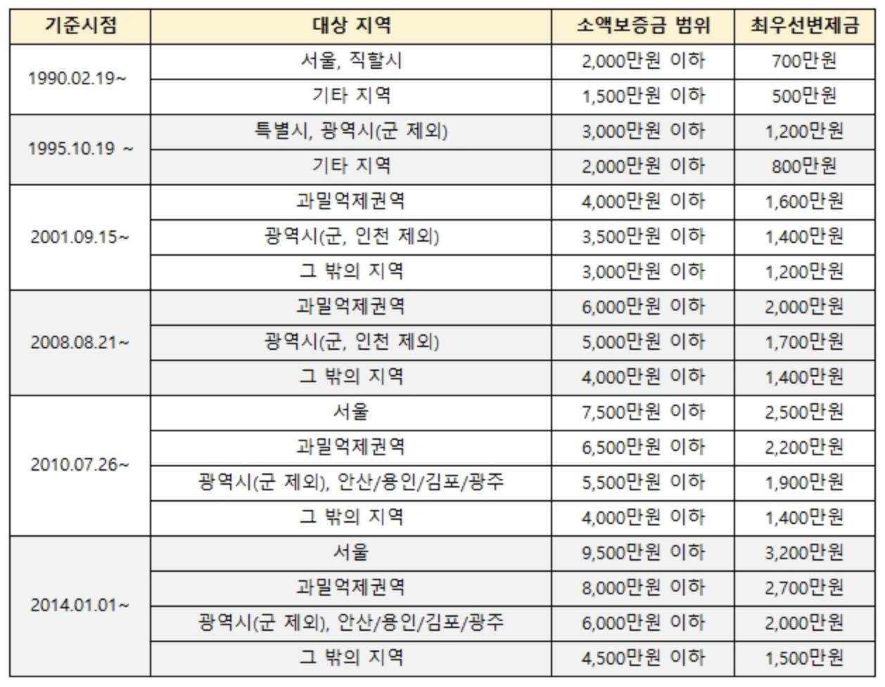
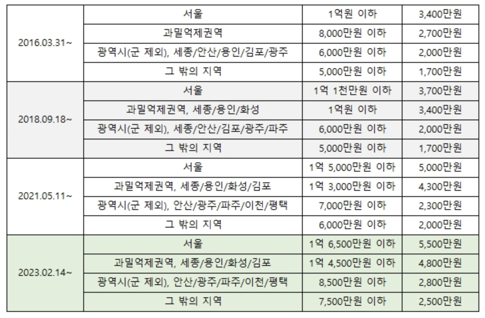
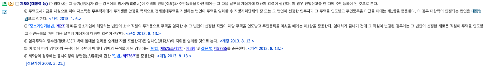
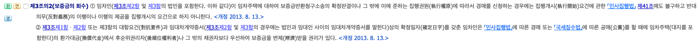
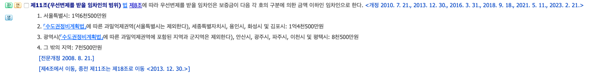
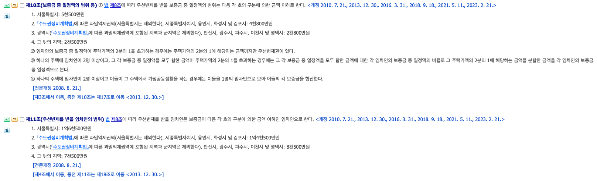

1. 등기사항전부 증명서 (등기부등본)
- 표제부 - 집 주에 대한 정보
- 갑구 - 소자 대한 정보
- 을구 - 소유권 이외 주요정보
How to check
- 열람일시
- 표제부의 주소 == 계약서 주소
- 갑구의 임대인 인적사항 == 계약서 인적사항 == 신분증 == 계좌주인
- If one of [가압류, 압류, 가등기, 가처분] is in 갑구 => X
- 을구 - 근저당권 : 해당 집을 담보로 대출 받은 사항 (채권최고액 == 대출금액, 당연히 적을수록 좋음)
- 임차권등기명령 is in 을구 => X
2. 소액임차인 우선변제 (우선변제권, 최우선변제권)
주택입대차보호법
주택입대차보호법 시행령
참고영상
참고영상
참고영상
Abstract :
최우선변제권이란 1. 특정 조건을 갖춘 경우 2. 보증금 중 일부를 최우선적으로 변제 받을 수 있는 법.
단, 최우선변제권 이라는 단어는 없음. 정확히는 우선변제를 받을 보증금 중 일정액을 다른 담보물권자보다 우선하여 변제받을 권리.
특히, top-down으로 관련법을 요약하면
주택임대차보호법 시행령의 제10조 - 최우선적으로 받을 수 있는 금액 기준이 있음.
주택임대차보호법 시행령의 제11조 - 최우선변제권의 특정 조건 중 소액임차임 기준이 있음.
주택임대차보호법 제8조 - 최우선변제권의 설명이 있음.
주택임대차보호법 제3조 - 최우선변제권의 특정 조건 중 대항력에 대한 정의가 있음.
주택임대차보호법 제3조의2 - 최우선변제권의 특정 조건 중 확정일자가 필요함을 명시함.
결론부터 말하면, 흔희 말하는 최우선변제를 받기 위해서는 인도 + 전입신고 + 확정일자 + 소액임차인 기준을 만족하면 된다.
아래는 각 기준의 법령에 의거한 정의와 해석이다.
1. 특정 조건
- 대항력 = 점유 + 전입신고
증금 전액 회수시까지 유지되어야 함. - 우선변제권 = 대항력 + 확정일자
나보다 후순위인 권리자보다 먼저 경매낙찰금에서 돈을 받을 수 있는 권리. 이게 없으면 그냥 못받는다고 생각하면 됨(순위가 계속 밀림.). - 최우선변제권 = 우선변제권 + 소액임차임
우선변제권이 있을 때, 소액임차임 기준도 만족하면, 특정 금액은 다른 담보물권자 보다 우선하여 받을 수 있음.
2. 소액임차임과 보증금 중 일부


내가 소액임차인 인지확인해야함 -> 표에서 소액보증금의 범위를 확인하면 됨.
보증금 중 일부 -> 표에서 최우선변제금을 확인하면 됨.
이때, 선순위 담보물권의 접수일를 확인해야함.
즉, 등기부등본에서 담보물권중 가장 빠른 날짜를 확인해야 한다는 의미. (대부분의 경우 근저당권에 이에해당함.)
기준시점을 이렇게 설정한 이유는 아마도 다음의 이유일듯.
은행도 돈을 빌려준 입장으로 무조건 손해를 볼 수는 없음.
즉, 은행보다 돈을 나중에 빌려준 사람에게 먼저 갚아야 하는게 말이 안됨.
단, 개인은 약자이므로 어느 정도는 사정을 봐주라는 의미.
근데, 여기서 만약 최우선변제금이 계속 늘어나는 상황인데 기준 시점이 그냥 현재로 하게 되면, 은행은 무조건적인 손해만 보게됨.
즉, 은행은 대출시점 기준의 최우선변제금만을 확인 하고난뒤 대출을 해준건데 이걸 법으로 강제로 늘려버리는 것을 방지하기 위함인듯.
주택임대차보호법과 주택임대차보호법 시행령 중 [우선변제, 대항력, 확정일자] 에 해당 하는 부분임.
2023.12.17 기준
주택임대차보호법
- 대항력의 정의
주택의 인도 + 주민등록(전입신고)
그 다음날 부터 발효됨

제3조(대항력 등)
① 임대차는 그 등기(登記)가 없는 경우에도 임차인(賃借人)이 주택의 인도(引渡)와 주민등록을
마친 때에는 그 다음 날부터 제삼자에 대하여 효력이 생긴다. 이 경우 전입신고를 한 때에 주민등록이 된 것으로 본다.
② 주택도시기금을 재원으로 하여 저소득층 무주택자에게 주거생활 안정을 목적으로 전세임대주택을 지원하는 법인이 주택을
임차한 후 지방자치단체의 장 또는 그 법인이 선정한 입주자가 그 주택을 인도받고 주민등록을 마쳤을 때에는 제1항을 준용한다.
이 경우 대항력이 인정되는 법인은 대통령령으로 정한다. <개정 2015. 1. 6.>
③ 「중소기업기본법」 제2조에 따른 중소기업에 해당하는 법인이 소속 직원의 주거용으로 주택을 임차한 후 그 법인이 선정한 직원이
해당 주택을 인도받고 주민등록을 마쳤을 때에는 제1항을 준용한다. 임대차가 끝나기 전에 그 직원이 변경된 경우에는 그 법인이
선정한 새로운 직원이 주택을 인도받고 주민등록을 마친 다음 날부터 제삼자에 대하여 효력이 생긴다. <신설 2013. 8. 13.>
④ 임차주택의 양수인(讓受人)(그 밖에 임대할 권리를 승계한 자를 포함한다)은 임대인(賃貸人)의 지위를 승계한 것으로 본다. <개정 2013. 8. 13.>
⑤ 이 법에 따라 임대차의 목적이 된 주택이 매매나 경매의 목적물이 된 경우에는 「민법」 제575조제1항ㆍ제3항 및 같은 법 제578조를 준용한다. <개정 2013. 8. 13.>
⑥ 제5항의 경우에는 동시이행의 항변권(抗辯權)에 관한 「민법」 제536조를 준용한다. <개정 2013. 8. 13.>
[전문개정 2008. 3. 21.]
- 우선변제권의 정의
대항력 + 확정일자

제3조의2(보증금의 회수)
① 임차인(제3조제2항 및 제3항의 법인을 포함한다. 이하 같다)이 임차주택에 대하여 보증금반환청구소송의 확정판결이나
그 밖에 이에 준하는 집행권원(執行權原)에 따라서 경매를 신청하는 경우에는 집행개시(執行開始)요건에 관한 「민사집행법」 제41조에도
불구하고 반대의무(反對義務)의 이행이나 이행의 제공을 집행개시의 요건으로 하지 아니한다. <개정 2013. 8. 13.>
② 제3조제1항ㆍ제2항 또는 제3항의 대항요건(對抗要件)과 임대차계약증서(제3조제2항 및 제3항의 경우에는 법인과
임대인 사이의 임대차계약증서를 말한다)상의 확정일자(確定日字)를 갖춘 임차인은 「민사집행법」에 따른
경매 또는 「국세징수법」에 따른 공매(公賣)를 할 때에 임차주택(대지를 포함한다)의 환가대금(換價代金)에서 후순위권리자(後順位權利者)나
그 밖의 채권자보다 우선하여 보증금을 변제(辨濟)받을 권리가 있다. <개정 2013. 8. 13.>
- 최우선변제권의 설명
은행보다 먼저 변제받으려면, 대항력(인도 + 주민등록(전입신고))가 되어 있어야 한다.
또한, 최우선변제는 우선변제이므로 2. 우선변제권의 정의에 따라 확정일자도 있어야 한다.
단, 최대 경매가의 1/2를 받을 수 있다.

제8조(보증금 중 일정액의 보호)
① 임차인은 보증금 중 일정액을 다른 담보물권자(擔保物權者)보다 우선하여 변제받을 권리가 있다.
이 경우 임차인은 주택에 대한 경매신청의 등기 전에 제3조제1항의 요건을 갖추어야 한다.
② 제1항의 경우에는 제3조의2제4항부터 제6항까지의 규정을 준용한다.
③ 제1항에 따라 우선변제를 받을 임차인 및 보증금 중 일정액의 범위와 기준은 제8조의2에 따른 주택임대차위원회의 심의를 거쳐 대통령령으로 정한다.
다만, 보증금 중 일정액의 범위와 기준은 주택가액(대지의 가액을 포함한다)의 2분의 1을 넘지 못한다. <개정 2009. 5. 8.>
[전문개정 2008. 3. 21.]
주택임대차보호법 시행령

- 최우선변제권의 가능 금액 여기서는 최우선변제권의 우선변제 가능 금액을 설명한다.
제10조(보증금 중 일정액의 범위 등)
① 법 제8조에 따라 우선변제를 받을 보증금 중 일정액의 범위는 다음 각 호의 구분에 의한 금액 이하로 한다. <개정 2010. 7. 21., 2013. 12. 30., 2016. 3. 31., 2018. 9. 18., 2021. 5. 11., 2023. 2. 21.>
1. 서울특별시: 5천500만원
2. 「수도권정비계획법」에 따른 과밀억제권역(서울특별시는 제외한다), 세종특별자치시, 용인시, 화성시 및 김포시: 4천800만원
3. 광역시(「수도권정비계획법」에 따른 과밀억제권역에 포함된 지역과 군지역은 제외한다), 안산시, 광주시, 파주시, 이천시 및 평택시: 2천800만원
4. 그 밖의 지역: 2천500만원
② 임차인의 보증금 중 일정액이 주택가액의 2분의 1을 초과하는 경우에는 주택가액의 2분의 1에 해당하는 금액까지만 우선변제권이 있다.
③ 하나의 주택에 임차인이 2명 이상이고, 그 각 보증금 중 일정액을 모두 합한 금액이 주택가액의 2분의 1을 초과하는 경우에는 그 각
보증금 중 일정액을 모두 합한 금액에 대한 각 임차인의 보증금 중 일정액의 비율로 그 주택가액의 2분의 1에 해당하는 금액을 분할한
금액을 각 임차인의 보증금 중 일정액으로 본다.
④ 하나의 주택에 임차인이 2명 이상이고 이들이 그 주택에서 가정공동생활을 하는 경우에는 이들을 1명의 임차인으로 보아 이들의 각 보증금을 합산한다.
[전문개정 2008. 8. 21.]
[제3조에서 이동, 종전 제10조는 제17조로 이동 <2013. 12. 30.>]
- 최우선변제권의 소액임차인기준
앞선 3. 최우선변제권의 설명에서 대항력(인도 + 주민등록(전입신고)) + 확정일자 였다.
여기서는 소액임차인기준을 설명한다.
제11조(우선변제를 받을 임차인의 범위) 법 제8조에 따라 우선변제를 받을 임차인은 보증금이 다음 각 호의 구분에 의한 금액 이하인 임차인으로 한다.
<개정 2010. 7. 21., 2013. 12. 30., 2016. 3. 31., 2018. 9. 18., 2021. 5. 11., 2023. 2. 21.>
1. 서울특별시: 1억6천500만원
2. 「수도권정비계획법」에 따른 과밀억제권역(서울특별시는 제외한다), 세종특별자치시, 용인시, 화성시 및 김포시: 1억4천500만원
3. 광역시(「수도권정비계획법」에 따른 과밀억제권역에 포함된 지역과 군지역은 제외한다), 안산시, 광주시, 파주시, 이천시 및 평택시: 8천500만원
4. 그 밖의 지역: 7천500만원
[전문개정 2008. 8. 21.]
[제4조에서 이동, 종전 제11조는 제18조로 이동 <2013. 12. 30.>]